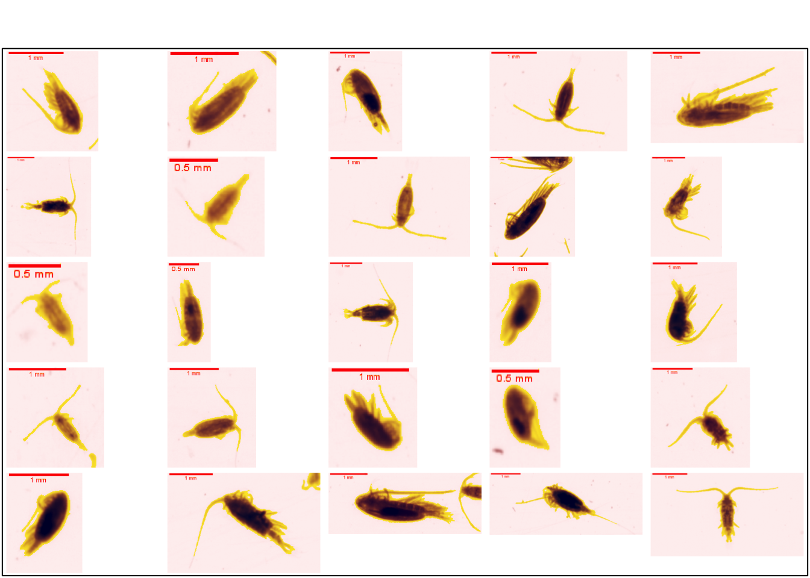
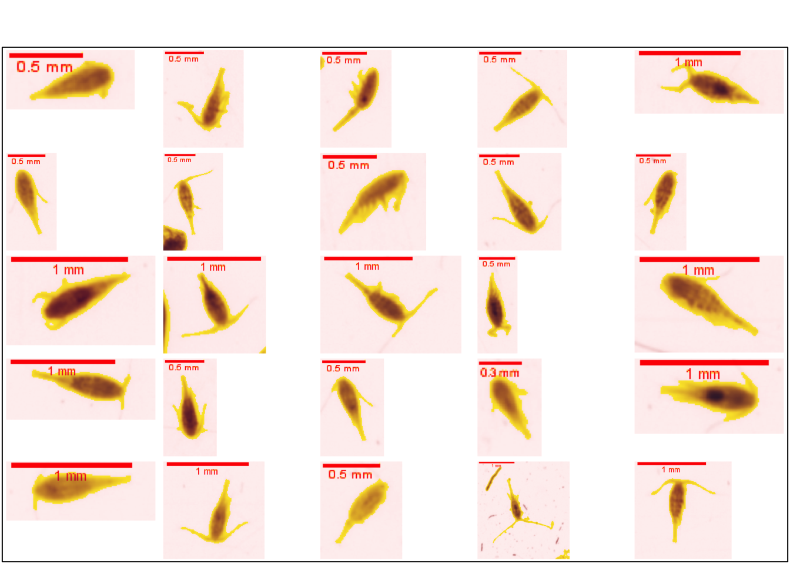

2 Copepoda
Les trois ordres de copépodes les plus abondants au niveau de la baie de Calvi sont considérés: Calanoida, Cyclopoida et Poecilostomatoida. Une étude récente tend cependant à inclure les Poecilostomatoida au sein des Cyclopoida (Khodami et al. 2017)
Dans ce guide, où le set d’apprentissage a été en 2016, l’ancienne taxonomie est utilisée.
Les Copepoda occupent une part importante dans la littérature sur le zooplancton grâcenotamment à leur distribution ubiquiste et à leur importance dans les réseaux trophiques marins. Ils sont également considérés comme les animaux multicellulaires les plus abondants sur terre (Richardson 2008).
Le corps des copépodes peut se subdiviser en trois parties : la tête (céphalosome), le thorax (métasome) et l’abdomen (urosome) dont la forme respective est un critère de différentiiation taxonomique important (Wooton et Castellani 2017).
knitr::include_graphics(path = "figures/classif3/copepoda.png")2.1 Gymnoplea
Le Super-ordre des Gymnoplea comprend l’ordre de Calanoida. Cet ordre comprend le plus grand nombre d’espèces au sein des copépodes. Ceux-ci possèdent généralemetn des antennules plus grandes que les céphalosome, ainsi qu’un urosome plus petit que le prosome (céphalosome + métasome) (Wooton et Castellani 2017).
dir <- stringr::str_subset(direction, "Gymnoplea")
plot_classification(dir)
2.2 Podoplea
2.2.1 Cyclopoida
Ce clade possède un urosome aussi long que le prosome, ainsi que des antennules généralement plus grandes que le céphalosome (Wooton et Castellani 2017).
dir <- stringr::str_subset(direction, "Cyclopoida")
plot_classification(dir)
2.2.2 Poecilostomatoida
Ce taxon comprend des espèces de formes variables. Les antennules sont ici plus petites que le céphalosome (Wooton et Castellani 2017). Seuls les individus appartenant aux familles des Corycaeidae et des Oncaeidae sont ici considéré
dir <- stringr::str_subset(direction, "Poecilostomatoida")
plot_classification(dir)